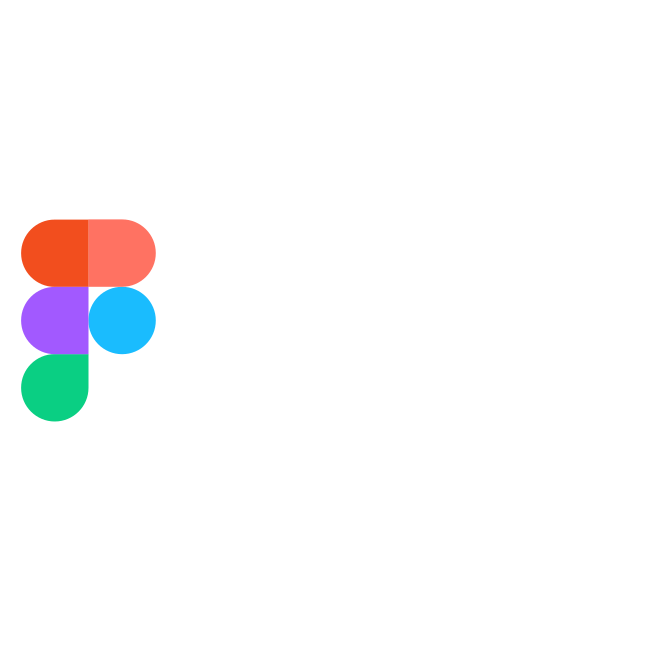
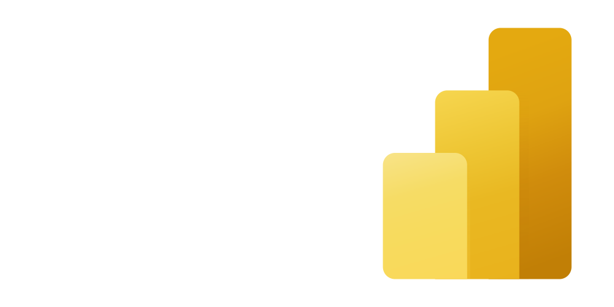

Estamos revivendo a Empresa Jr na Faculdade, e queremos saber se você quer fazer parte desse movimento!

O que é a Empresa Jr?
Empresa Júnior é uma associação civil sem fins lucrativos, formada e gerida por alunos de um curso superior, cujos principais objetivos são:
- Fomentar o aprendizado prático do universitário em sua área de atuação;
- Aproximar o mercado de trabalho das academias e os próprios acadêmicos;
- Gerir com autonomia em relação à direção da faculdade ou centro acadêmico;
- Elaborar projetos de consultoria na área de formação dos alunos.
Quem pode participar?
Qualquer um que esteja ingressado em algum curso nas Faculdades Dom Bosco em Resende pode participar do processo seletivo. E não é necessário qualquer tipo de experiência profissional!
Quais os benefícios?
Além das tão buscadas horas complementares e experiência em projetos reais, temos alguns chamativos que você pode gostar:
-
Capacitação
Não esperamos que você seja um especialista na área, mas sim que você tenha disponibilidade e vontade de aprender. Dentro da empresa, os que passarem no processo seletivo poderão participar de uma série de treinamentos para nivelar os conhecimentos dos integrantes.
-
Ferramentas do Mercado
No dia a dia da empresa se prepare para usar as metodologias e tecnologias mais atuais do mercado!
 
-
Networking
Conheça e trabelhe com alunos de outros cursos, participe de eventos, reuniões e amplie sua rede de contatos!